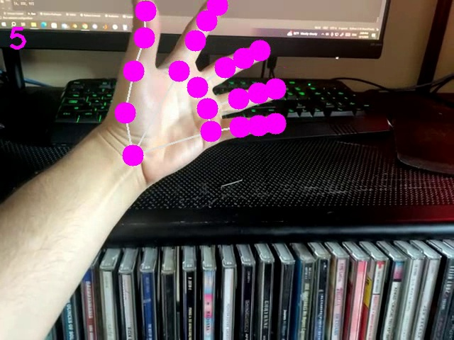
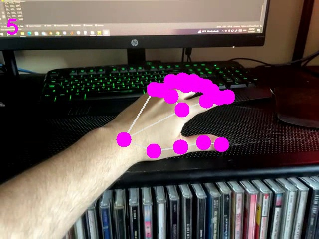

Hand Detector Module
Summary
In this project, I created and implemented a live feed Hand Tracking program. Hand Tracking is a useful basis for many computer vision projects. By performing Hand Detection on a webcam feed, I learned to use OpenCV and Mediapipe libraries in Python. The final product was able to detect any of the 21 different Landmarks outlined in Google's Mediapipe documentation.
Background
Hand Tracking is common feature for a variety of computer vision projects. Whether it is in Game Controls or Sign Language Detection, being able to detect hand movement is useful. The key scope of this project was to create a simple base Hand Tracking Module that can be used in more complex projects as necessary.
Imports
import cv2
import mediapipe as mp
import time
OpenCV and Mediapipe libraries are needed. Together these libraries process the images and detect faces. Aside from this the time module is required for displaying the frames per second that the file is currently running at.
Hand Detector Class
This class contains 3 functions: Init, Find Hands, and Find Position. For ease of readability each function will be discussed separately.
Init
def __init__(self, mode=False, maxHands=2, modelComp=1, detectionCon=0.5, trackCon=0.5):
self.mode = mode
self.maxHands = maxHands
self.modelComp = modelComp
self.detectionCon = detectionCon
self.trackCon = trackCon
self.mpHands = mp.solutions.hands
self.hands = self.mpHands.Hands(self.mode, self.maxHands, self.modelComp,
self.detectionCon, self.trackCon)
self.mpDraw = mp.solutions.drawing_utils
This function initializes the Mediapipe hand detection algorithm. It defines the initial parameters of: Mode, Maximum Hands, Model Complexity, Detection Confidence, and Tracking Confidence. Then, it generates the model and enables the Drawing Utilities.
Find Hands
def find_hands(self, frame, draw=True):
imgRGB = cv2.cvtColor(frame, cv2.COLOR_BGR2RGB)
self.results = self.hands.process(imgRGB)
# print(results.multi_hand_landmarks)
if self.results.multi_hand_landmarks:
for handLms in self.results.multi_hand_landmarks:
if draw:
self.mpDraw.draw_landmarks(frame, handLms,
self.mpHands.HAND_CONNECTIONS)
return frame
This function inputs an Image and a Draw Boolean. the image gets converted to hsv Colorspace to be processed. The image processed by the Initial Hand Detection function outputs the Landmarks that can then be drawn each frame. This newly processed Image is returned by this function.
Find Position
def find_position(self, frame, handNo=0, draw=True):
lmList = []
if self.results.multi_hand_landmarks:
myHand = self.results.multi_hand_landmarks[handNo]
for id, lm, in enumerate(myHand.landmark):
# print(id, lm)
h, w, c = frame.shape
cx, cy = int(lm.x * w), int(lm.y * h)
# print(id, cx, cy)
lmList.append([id, cx, cy])
if draw:
cv2.circle(frame, (cx, cy), 15, (255, 0, 255), cv2.FILLED)
return lmListThis function finds the position of a desired Landmark. It does so by creating an empty list that can have the landmark number, X position, and Y position appended to the empty list. This function also has a Draw Boolean so you can enable or disable specific Landmark Visualization. The function returns the list of landmarks.
Main Loop
def main():
pTime = 0
cTime = 0
cap = cv2.VideoCapture(1)
detector = HandDetector()
while True:
ret, frame = cap.read()
frame = detector.find_hands(frame)
lmList = detector.find_position(frame)
if len(lmList) != 0:
print(lmList[4])
cTime = time.time()
fps = 1 / (cTime - pTime)
pTime = cTime
cv2.putText(frame, str(int(fps)), (10, 70), cv2.FONT_HERSHEY_PLAIN, 3,
(255, 0, 255), 3)
cv2.imshow('frame', frame)
cv2.waitKey(1)
if __name__ == "__main__":
main()This function loop displays the frames per second of the program on the live feed as well as runs the entire Hand Detection system. It Does so by defining a Hand Detector Object, accessing the object each frame, and detecting the desired Landmarks each frame. It ensures to wait for landmarks to be saved before detecting them. The system notifies the user by printing the list of landmarks in the terminal.
Results
This image shows a sample of the hand detection from th live webcam feed.